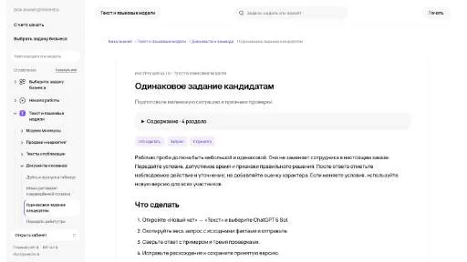

МолекулаАгрегаторы нейросетей
Молекула объединяет модели для текстов, изображений, видео и музыки. В одном аккаунте можно подобрать инструмент под этап работы, сохранить инструкции проекта и использовать готовые роли.
К задаче в МолекулеРаздел «HR»: варианты ИИ для этой задачи, описания возможностей и переходы к обзорам. Сравните несколько решений на одинаковом примере.
Задайте один навык и одинаковые исходные условия для всех кандидатов. В Молекуле можно подготовить упражнение и критерии разбора; оценку и решение по найму принимает человек.
Составь одинаковое задание кандидатам на поддержку: ответить по правилам на неполное обращение. Добавь критерии полноты и точности. Возраст, личные качества и внешность не оценивай.

Молекула объединяет модели для текстов, изображений, видео и музыки. В одном аккаунте можно подобрать инструмент под этап работы, сохранить инструкции проекта и использовать готовые роли.
К задаче в Молекуле«Existential» представлен в разделе «HR». При выборе проверьте нужную операцию и условия работы с результатом.
«Talent Llama» помогает отбирать кандидатов для следующего этапа рассмотрения.
«Kiru AI» помогает соединить повторяемые рабочие действия.
«Tiered» представлен в разделе «Нейрокоучи». При выборе проверьте нужную операцию и условия работы с результатом.
«Flipped AI» помогает соединить повторяемые рабочие действия.
«Aspect (aspect-hq.com)» преобразует речевую запись в письменный материал. «Aspect (aspect-hq.com)» также помогает упорядочить рабочие заметки.
«Assembly» представлен в разделе «Бизнес». При выборе проверьте нужную операцию и условия работы с результатом.
«Canopy» представлен в разделе «Образование». При выборе проверьте нужную операцию и условия работы с результатом.
Careerflow AI помогает организовывать поиск работы и отслеживать вакансии средствами CRM. Инструмент рассматривает навыки пользователя и подготавливает сопроводительные письма с участием ИИ. База нанимающих компаний дополняет эти действия, связывая материалы отклика и информацию о возможных работодателях в процессе поиска.
«Diarupt» связан с обработкой обращений клиентов.
«Resume Copilot» представлен в разделе «HR». При выборе проверьте нужную операцию и условия работы с результатом.
«Metaview» помогает упорядочить рабочие заметки.
Для «Respell» сначала определите свою задачу и требуемый результат. Карточка относится к направлению «Email».
Сравнивать «testportal.net» с другими инструментами раздела «Образование» удобнее на одинаковом исходном материале.
besuperhuman AI предлагает готовые ИИ-команды для задач компании, включая социальные публикации, подбор сотрудников, бухгалтерские операции и клиентскую поддержку. Предусмотрены работа без программирования и расширение Chrome. Продукт связывает выбранное направление с автоматизацией процесса, но конкретный состав действий зависит от используемой команды.
Сравнивать «Catalyst» с другими инструментами раздела «HR» удобнее на одинаковом исходном материале.
Для «Dover» сначала определите свою задачу и требуемый результат. Карточка относится к направлению «Чат-боты и ассистенты».
«Turbo Search» представлен в разделе «HR». При выборе проверьте нужную операцию и условия работы с результатом.
Для «Gamma AI» сначала определите свою задачу и требуемый результат. Карточка относится к направлению «HR».
«Job Description Generator» подготавливает описание вакансии по сведениям о роли.
Для «RecruitCRM» сначала определите свою задачу и требуемый результат. Карточка относится к направлению «HR».
SINT использует ИИ для обработки материалов собеседования и оценки навыков кандидата. В описании продукта также заявлены анализ личностных характеристик и распознавание эмоций. Полученные сведения предназначены для процесса подбора сотрудников и рассмотрения кандидатов по профессиональным признакам.
«Talentplace AI» помогает подготовить резюме.
Для «Interact» сначала определите свою задачу и требуемый результат. Карточка относится к направлению «HR».
«Kula AI» помогает организовать последовательность действий при найме.
«Onri» представлен в разделе «HR». При выборе проверьте нужную операцию и условия работы с результатом.
PolygrAI анализирует мимику и характеристики голоса во время разговора. Сервис заявляет оценку признаков возможного обмана и эмоциональной окраски на основе поведенческих сигналов. Материал предназначен для рассмотрения встреч и собеседований, где требуется наблюдать за особенностями взаимодействия участников.
«Поток» представлен в разделе «HR». При выборе проверьте нужную операцию и условия работы с результатом.
Для «Wizco» сначала определите свою задачу и требуемый результат. Карточка относится к направлению «HR».
«Воронка найма» представлен в разделе «HR». При выборе проверьте нужную операцию и условия работы с результатом.
Applicant AI помогает организовывать подбор персонала и процессы адаптации с участием ИИ. Платформа оценивает кандидатов и предоставляет сведения для рассмотрения решений. Работа объединяет автоматизацию действий найма и последующее включение сотрудника в организацию, связывая этапы общего кадрового процесса.
Deskflow использует ИИ для взаимодействия с сотрудниками и автоматизации повторяющихся действий. Платформа помогает создавать обращения и назначать их исполнителям. Работа также включает поддержку сотрудников совместно с командой, связывая выполнение повседневных задач с обработкой заявок внутри организации.
«HireYaY» помогает соединить повторяемые рабочие действия.
Сравнивать «Holly» с другими инструментами раздела «Бизнес» удобнее на одинаковом исходном материале.
Сравнивать «Vmock.com» с другими инструментами раздела «Образование» удобнее на одинаковом исходном материале.
«XENIA» представлен в разделе «HR». При выборе проверьте нужную операцию и условия работы с результатом.
«AI Cartel - AI Recruiter» помогает организовать работу по подбору персонала.
Effy помогает организовать оценку сотрудников и обработку обратной связи средствами ИИ. В продукте предусмотрены подготовленные шаблоны и подключения к Slack и Microsoft Teams. Программа связывает сбор отзывов с анализом работы персонала, используя привычные командные каналы и формы для проведения оценки.
«Helio AI» помогает отбирать кандидатов для следующего этапа рассмотрения.
Для «Rework AI» сначала определите свою задачу и требуемый результат. Карточка относится к направлению «HR».
Сравнивать «solvt AI» с другими инструментами раздела «Анализ данных» удобнее на одинаковом исходном материале.
Сравнивать «Aire» с другими инструментами раздела «HR» удобнее на одинаковом исходном материале.
Сравнивать «Eightfold» с другими инструментами раздела «HR» удобнее на одинаковом исходном материале.
«Hollo» помогает соединить повторяемые рабочие действия.
Ideal Hire AI анализирует резюме и помогает отбирать кандидатов под требования вакансии. Инструмент сопоставляет заявленные навыки с нужным профилем и формирует выборку для дальнейшего рассмотрения. Материал предназначен для менеджеров по найму и сотрудников отдела персонала при принятии решения.
Сравнивать «Onboardix» с другими инструментами раздела «Продуктивность» удобнее на одинаковом исходном материале.
Страница 1 из 1